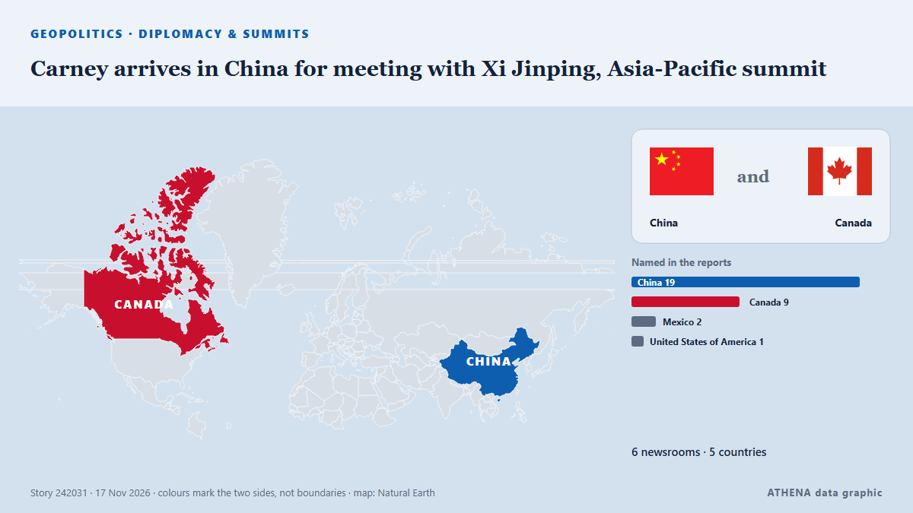

Carney arrives in China for meeting with Xi Jinping, Asia-Pacific summit

Prime Minister Mark Carney arrived in China on Monday, where he is set to meet with Chinese President Xi Jinping and leaders from across the Pacific Rim. από CBC News
Αναφέρθηκε ανεξάρτητα από 6 μέσα σε 5 χώρες από τις 5 Μαΐ, πρώτο το CBC News (alternative feed)· η κάλυψη εξασθενεί. Το ATHENA εκτιμά τον κίνδυνο χαμηλό (1.1/10), κυρίως λόγω της σοβαρότητάς του και της εμβέλειάς του. Βεβαιότητα 82% (υψηλή): το επιβεβαιώνουν 6 ανεξάρτητα μέσα, μέση αξιοπιστία 78%. Μέσα ανά χώρα: Καναδάς (3), Τουρκία (1), Σιγκαπούρη (1). Κάλυψη: 5 Μαΐ έως 17 Νοε, 13451 ώρες.
Γιατί έχει σημασία: Οι εξελίξεις στην ασφάλεια και τη διπλωματία μπορούν να μετατοπίσουν συμμαχίες, εμπόριο και αγορές πολύ πέρα από τις χώρες που εμπλέκονται.
Τι άλλαξε: 6 νέες αναφορές από 6 μέσα στο 24ωρο έως 17 Νοε.
Πρώτη διατύπωση: Canada may look to China on vehicle manufacturing: Carney
ΑυτοματοποιημένοΕπιλέχθηκε, ομαδοποιήθηκε και βαθμολογήθηκε με τη δημοσιευμένη μέθοδο της ATHENA από 7 ανεξάρτητα μέσα. Ο τίτλος είναι του μέσου· οι προτάσεις της ATHENA ακολουθούν σταθερά πρότυπα - δεν τις γράφει παραγωγική ΤΝ. Πώς λειτουργεί →
Πώς να διαβάσετε αυτή τη σελίδα
- Τι διαβάζετε
- 6 μέσα σε 5 χώρες ανέφεραν αυτό το γεγονός. Οι αναφορές παρακάτω εμφανίζονται με τη σειρά που δημοσιεύτηκαν· κάθε τίτλος ανοίγει το αρχικό άρθρο. Το ATHENA δεν γράφει δικά του ρεπορτάζ.
- Η εκτίμησή μας
- Για την καταγραφή — Οι αναφορές περιγράφουν ένα ολοκληρωμένο, εσωτερικό, εμπορικό ή προσωπικό ζήτημα. Το καταγράφουμε ώστε να βλέπετε ποιος το ανέφερε και πότε. Δεν παρακολουθούμε εδώ κίνδυνο ευρύτερης σύγκρουσης.
- Πόσα στοιχεία υπάρχουν
- Περιορισμένη Αντιμετωπίστε τη σελίδα ως πρώιμη αναφορά.
Αφού αφαιρεθούν οι επαναλήψεις, τα άσχετα και τα παλιά στοιχεία, υπολογίζονται 6 από τις 7 αναφορές που παρατίθενται· το 100% των τίτλων αντιστοιχεί στο γεγονός.
Περίπου το 33% των τίτλων είναι ανάλυση ή άποψη και όχι απλό ρεπορτάζ.
- Τι δεν σημαίνει
- Το ATHENA μετρά πώς καλύπτεται ένα γεγονός, όχι αν είναι αληθές. Δεν είναι πρόβλεψη, κρίση για το ποιος έχει δίκιο ή συμβουλή.
- Τι θα την άλλαζε
- Αναφορές από άλλα ανεξάρτητα μέσα που δείχνουν διαφορετική εξέλιξη, ή σαφής επιβεβαίωση ή διάψευση από επίσημη πηγή.
Εκτίμηση R2 · ανανεώνεται με κάθε ενημέρωση της σελίδας. Το ATHENA δεν έχει δημοσιεύσει ακόμη ιστορικό επιδόσεων για αυτές τις εκτιμήσεις· όταν το κάνει, θα συνδέεται εδώ.
Με μια ματιά
Επιλέγεται, βαθμολογείται και γράφεται από τη δημοσιευμένη μεθοδολογία του ATHENA. Κανένας συντάκτης δεν παρεμβαίνει σε μεμονωμένα γεγονότα. Πώς παράγεται ›
| 05 May 15:35 UTC | 1 |
|---|---|
| 07 May 15:35 UTC | 0 |
| 09 May 15:35 UTC | 0 |
| 11 May 15:35 UTC | 0 |
| 13 May 15:35 UTC | 0 |
| 15 May 15:35 UTC | 0 |
| 17 May 15:35 UTC | 0 |
| 19 May 15:35 UTC | 0 |
| 21 May 15:35 UTC | 0 |
| 23 May 15:35 UTC | 0 |
| 25 May 15:35 UTC | 0 |
| 27 May 15:35 UTC | 0 |
| 29 May 15:35 UTC | 0 |
| 31 May 15:35 UTC | 0 |
| 02 Jun 15:35 UTC | 0 |
| 04 Jun 15:35 UTC | 0 |
| 06 Jun 15:35 UTC | 0 |
| 08 Jun 15:35 UTC | 0 |
| 10 Jun 15:35 UTC | 0 |
| 12 Jun 15:35 UTC | 0 |
| 14 Jun 15:35 UTC | 0 |
| 16 Jun 15:35 UTC | 0 |
| 18 Jun 15:35 UTC | 0 |
| 20 Jun 15:35 UTC | 0 |
| 22 Jun 15:35 UTC | 0 |
| 24 Jun 15:35 UTC | 0 |
| 26 Jun 15:35 UTC | 0 |
| 28 Jun 15:35 UTC | 0 |
| 30 Jun 15:35 UTC | 0 |
| 02 Jul 15:35 UTC | 0 |
| 04 Jul 15:35 UTC | 0 |
| 06 Jul 15:35 UTC | 0 |
| 08 Jul 15:35 UTC | 0 |
| 10 Jul 15:35 UTC | 0 |
| 12 Jul 15:35 UTC | 0 |
| 14 Jul 15:35 UTC | 0 |
| 16 Jul 15:35 UTC | 0 |
| 18 Jul 15:35 UTC | 0 |
| 20 Jul 15:35 UTC | 0 |
| 22 Jul 15:35 UTC | 0 |
| 24 Jul 15:35 UTC | 0 |
| 26 Jul 15:35 UTC | 0 |
| 28 Jul 15:35 UTC | 0 |
| 30 Jul 15:35 UTC | 0 |
| 01 Aug 15:35 UTC | 0 |
| 03 Aug 15:35 UTC | 0 |
| 05 Aug 15:35 UTC | 0 |
| 07 Aug 15:35 UTC | 0 |
| 09 Aug 15:35 UTC | 0 |
| 11 Aug 15:35 UTC | 0 |
| 13 Aug 15:35 UTC | 0 |
| 15 Aug 15:35 UTC | 0 |
| 17 Aug 15:35 UTC | 0 |
| 19 Aug 15:35 UTC | 0 |
| 21 Aug 15:35 UTC | 0 |
| 23 Aug 15:35 UTC | 0 |
| 25 Aug 15:35 UTC | 0 |
| 27 Aug 15:35 UTC | 0 |
| 29 Aug 15:35 UTC | 0 |
| 31 Aug 15:35 UTC | 0 |
| 02 Sep 15:35 UTC | 0 |
| 04 Sep 15:35 UTC | 0 |
| 06 Sep 15:35 UTC | 0 |
| 08 Sep 15:35 UTC | 0 |
| 10 Sep 15:35 UTC | 0 |
| 12 Sep 15:35 UTC | 0 |
| 14 Sep 15:35 UTC | 0 |
| 16 Sep 15:35 UTC | 0 |
| 18 Sep 15:35 UTC | 0 |
| 20 Sep 15:35 UTC | 0 |
| 22 Sep 15:35 UTC | 0 |
| 24 Sep 15:35 UTC | 0 |
| 26 Sep 15:35 UTC | 0 |
| 28 Sep 15:35 UTC | 0 |
| 30 Sep 15:35 UTC | 0 |
| 02 Oct 15:35 UTC | 0 |
| 04 Oct 15:35 UTC | 0 |
| 06 Oct 15:35 UTC | 0 |
| 08 Oct 15:35 UTC | 0 |
| 10 Oct 15:35 UTC | 0 |
| 12 Oct 15:35 UTC | 0 |
| 14 Oct 15:35 UTC | 0 |
| 16 Oct 15:35 UTC | 0 |
| 18 Oct 15:35 UTC | 0 |
| 20 Oct 15:35 UTC | 0 |
| 22 Oct 15:35 UTC | 0 |
| 24 Oct 15:35 UTC | 0 |
| 26 Oct 15:35 UTC | 0 |
| 28 Oct 15:35 UTC | 0 |
| 30 Oct 15:35 UTC | 0 |
| 01 Nov 15:35 UTC | 0 |
| 03 Nov 15:35 UTC | 0 |
| 05 Nov 15:35 UTC | 0 |
| 07 Nov 15:35 UTC | 0 |
| 09 Nov 15:35 UTC | 0 |
| 11 Nov 15:35 UTC | 0 |
| 13 Nov 15:35 UTC | 0 |
| 15 Nov 15:35 UTC | 0 |
| 17 Nov 15:35 UTC | 0 |
| 19 Nov 15:35 UTC | 0 |
| 21 Nov 15:35 UTC | 0 |
| 23 Nov 15:35 UTC | 0 |
| 25 Nov 15:35 UTC | 0 |
| 27 Nov 15:35 UTC | 0 |
| 29 Nov 15:35 UTC | 0 |
| 01 Dec 15:35 UTC | 0 |
| 03 Dec 15:35 UTC | 0 |
| 05 Dec 15:35 UTC | 0 |
| 07 Dec 15:35 UTC | 0 |
| 09 Dec 15:35 UTC | 0 |
| 11 Dec 15:35 UTC | 0 |
| 13 Dec 15:35 UTC | 0 |
| 15 Dec 15:35 UTC | 0 |
| 17 Dec 15:35 UTC | 0 |
| 19 Dec 15:35 UTC | 0 |
| 21 Dec 15:35 UTC | 0 |
| 23 Dec 15:35 UTC | 0 |
| 25 Dec 15:35 UTC | 0 |
| 27 Dec 15:35 UTC | 0 |
| 29 Dec 15:35 UTC | 0 |
| 31 Dec 15:35 UTC | 0 |
| 02 Jan 15:35 UTC | 0 |
| 04 Jan 15:35 UTC | 0 |
| 06 Jan 15:35 UTC | 0 |
| 08 Jan 15:35 UTC | 0 |
| 10 Jan 15:35 UTC | 0 |
| 12 Jan 15:35 UTC | 0 |
| 14 Jan 15:35 UTC | 0 |
| 16 Jan 15:35 UTC | 0 |
| 18 Jan 15:35 UTC | 0 |
| 20 Jan 15:35 UTC | 0 |
| 22 Jan 15:35 UTC | 0 |
| 24 Jan 15:35 UTC | 0 |
| 26 Jan 15:35 UTC | 0 |
| 28 Jan 15:35 UTC | 0 |
| 30 Jan 15:35 UTC | 0 |
| 01 Feb 15:35 UTC | 0 |
| 03 Feb 15:35 UTC | 0 |
| 05 Feb 15:35 UTC | 0 |
| 07 Feb 15:35 UTC | 0 |
| 09 Feb 15:35 UTC | 0 |
| 11 Feb 15:35 UTC | 0 |
| 13 Feb 15:35 UTC | 0 |
| 15 Feb 15:35 UTC | 0 |
| 17 Feb 15:35 UTC | 0 |
| 19 Feb 15:35 UTC | 0 |
| 21 Feb 15:35 UTC | 0 |
| 23 Feb 15:35 UTC | 0 |
| 25 Feb 15:35 UTC | 0 |
| 27 Feb 15:35 UTC | 0 |
| 01 Mar 15:35 UTC | 0 |
| 03 Mar 15:35 UTC | 0 |
| 05 Mar 15:35 UTC | 0 |
| 07 Mar 15:35 UTC | 0 |
| 09 Mar 15:35 UTC | 0 |
| 11 Mar 15:35 UTC | 0 |
| 13 Mar 15:35 UTC | 0 |
| 15 Mar 15:35 UTC | 0 |
| 17 Mar 15:35 UTC | 0 |
| 19 Mar 15:35 UTC | 0 |
| 21 Mar 15:35 UTC | 0 |
| 23 Mar 15:35 UTC | 0 |
| 25 Mar 15:35 UTC | 0 |
| 27 Mar 15:35 UTC | 0 |
| 29 Mar 15:35 UTC | 0 |
| 31 Mar 15:35 UTC | 0 |
| 02 Apr 15:35 UTC | 0 |
| 04 Apr 15:35 UTC | 0 |
| 06 Apr 15:35 UTC | 0 |
| 08 Apr 15:35 UTC | 0 |
| 10 Apr 15:35 UTC | 0 |
| 12 Apr 15:35 UTC | 0 |
| 14 Apr 15:35 UTC | 0 |
| 16 Apr 15:35 UTC | 0 |
| 18 Apr 15:35 UTC | 0 |
| 20 Apr 15:35 UTC | 0 |
| 22 Apr 15:35 UTC | 0 |
| 24 Apr 15:35 UTC | 0 |
| 26 Apr 15:35 UTC | 0 |
| 28 Apr 15:35 UTC | 0 |
| 30 Apr 15:35 UTC | 0 |
| 02 May 15:35 UTC | 0 |
| 04 May 15:35 UTC | 0 |
| 06 May 15:35 UTC | 0 |
| 08 May 15:35 UTC | 0 |
| 10 May 15:35 UTC | 0 |
| 12 May 15:35 UTC | 0 |
| 14 May 15:35 UTC | 0 |
| 16 May 15:35 UTC | 0 |
| 18 May 15:35 UTC | 0 |
| 20 May 15:35 UTC | 0 |
| 22 May 15:35 UTC | 0 |
| 24 May 15:35 UTC | 0 |
| 26 May 15:35 UTC | 0 |
| 28 May 15:35 UTC | 0 |
| 30 May 15:35 UTC | 0 |
| 01 Jun 15:35 UTC | 0 |
| 03 Jun 15:35 UTC | 0 |
| 05 Jun 15:35 UTC | 0 |
| 07 Jun 15:35 UTC | 0 |
| 09 Jun 15:35 UTC | 0 |
| 11 Jun 15:35 UTC | 0 |
| 13 Jun 15:35 UTC | 0 |
| 15 Jun 15:35 UTC | 0 |
| 17 Jun 15:35 UTC | 0 |
| 19 Jun 15:35 UTC | 0 |
| 21 Jun 15:35 UTC | 0 |
| 23 Jun 15:35 UTC | 0 |
| 25 Jun 15:35 UTC | 0 |
| 27 Jun 15:35 UTC | 0 |
| 29 Jun 15:35 UTC | 0 |
| 01 Jul 15:35 UTC | 0 |
| 03 Jul 15:35 UTC | 0 |
| 05 Jul 15:35 UTC | 0 |
| 07 Jul 15:35 UTC | 0 |
| 09 Jul 15:35 UTC | 0 |
| 11 Jul 15:35 UTC | 0 |
| 13 Jul 15:35 UTC | 0 |
| 15 Jul 15:35 UTC | 0 |
| 17 Jul 15:35 UTC | 0 |
| 19 Jul 15:35 UTC | 0 |
| 21 Jul 15:35 UTC | 0 |
| 23 Jul 15:35 UTC | 0 |
| 25 Jul 15:35 UTC | 0 |
| 27 Jul 15:35 UTC | 0 |
| 29 Jul 15:35 UTC | 0 |
| 31 Jul 15:35 UTC | 0 |
| 02 Aug 15:35 UTC | 0 |
| 04 Aug 15:35 UTC | 0 |
| 06 Aug 15:35 UTC | 0 |
| 08 Aug 15:35 UTC | 0 |
| 10 Aug 15:35 UTC | 0 |
| 12 Aug 15:35 UTC | 0 |
| 14 Aug 15:35 UTC | 0 |
| 16 Aug 15:35 UTC | 0 |
| 18 Aug 15:35 UTC | 0 |
| 20 Aug 15:35 UTC | 0 |
| 22 Aug 15:35 UTC | 0 |
| 24 Aug 15:35 UTC | 0 |
| 26 Aug 15:35 UTC | 0 |
| 28 Aug 15:35 UTC | 0 |
| 30 Aug 15:35 UTC | 0 |
| 01 Sep 15:35 UTC | 0 |
| 03 Sep 15:35 UTC | 0 |
| 05 Sep 15:35 UTC | 0 |
| 07 Sep 15:35 UTC | 0 |
| 09 Sep 15:35 UTC | 0 |
| 11 Sep 15:35 UTC | 0 |
| 13 Sep 15:35 UTC | 0 |
| 15 Sep 15:35 UTC | 0 |
| 17 Sep 15:35 UTC | 0 |
| 19 Sep 15:35 UTC | 0 |
| 21 Sep 15:35 UTC | 0 |
| 23 Sep 15:35 UTC | 0 |
| 25 Sep 15:35 UTC | 0 |
| 27 Sep 15:35 UTC | 0 |
| 29 Sep 15:35 UTC | 0 |
| 01 Oct 15:35 UTC | 0 |
| 03 Oct 15:35 UTC | 0 |
| 05 Oct 15:35 UTC | 0 |
| 07 Oct 15:35 UTC | 0 |
| 09 Oct 15:35 UTC | 0 |
| 11 Oct 15:35 UTC | 0 |
| 13 Oct 15:35 UTC | 0 |
| 15 Oct 15:35 UTC | 0 |
| 17 Oct 15:35 UTC | 0 |
| 19 Oct 15:35 UTC | 0 |
| 21 Oct 15:35 UTC | 0 |
| 23 Oct 15:35 UTC | 0 |
| 25 Oct 15:35 UTC | 0 |
| 27 Oct 15:35 UTC | 0 |
| 29 Oct 15:35 UTC | 0 |
| 31 Oct 15:35 UTC | 0 |
| 02 Nov 15:35 UTC | 0 |
| 04 Nov 15:35 UTC | 0 |
| 06 Nov 15:35 UTC | 0 |
| 08 Nov 15:35 UTC | 0 |
| 10 Nov 15:35 UTC | 0 |
| 12 Nov 15:35 UTC | 0 |
| 14 Nov 15:35 UTC | 0 |
| 16 Nov 15:35 UTC | 6 |
| 16 Nov 18:32 UTC | 0.0 |
|---|---|
| 17 Nov 00:10 UTC | 1.1 |
| 17 Nov 02:50 UTC | 1.1 |
Γιατί αυτοί οι αριθμοί
Σημασία
Κίνδυνος
Βεβαιότητα
Η κάλυψη — ποιος το ανέφερε και πότε
ο τίτλος όπως δημοσιεύτηκε · ανοίγει το πρωτότυπο- CBC News (alternative feed) · ΚαναδάςCanada and China announce new trade measures and cultural partnerships on Carney's 1st day in Shenzhen
- Anadolu Agency (English) · ΤουρκίαCanada may look to China on vehicle manufacturing: Carney
- The Straits Times · ΣιγκαπούρηCarney to meet Xi on Tuesday to talk food, energy and financial services
- CBC News · ΚαναδάςCarney arrives in China for meeting with Xi Jinping, Asia-Pacific summit
- Mexico News Daily · ΜεξικόSheinbaum lands in Shenzhen on a commercial flight, then heads straight to tacos with Mexicans living in China
- Global News (World) · ΚαναδάςHow Carney’s China visit highlights the stakes—and risks—of closer ties
- CGTN (World) · ΚίναChinese President Xi Jinping meets Canadian PM Mark Carney in Shenzhen